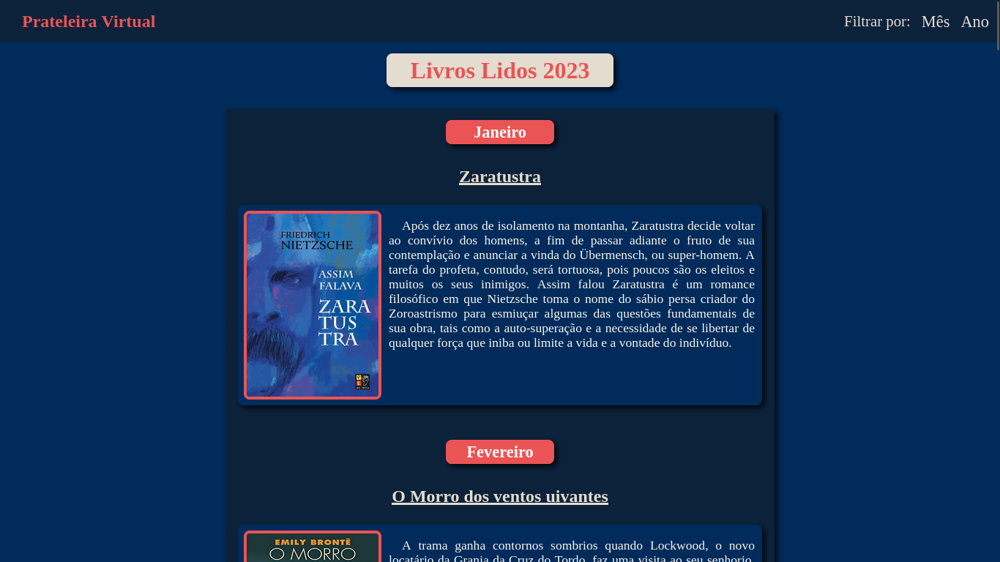

Técnico em Informática para Internet | Analista e Desenvolvedor de sistemas.

Sobre mim
Técnico em Informática para Internet pela ETEC-PG, onde desenvolvi habilidades técnicas de programação para desenvolvimento web, conexão e manipulação de bancos de dados MySQL utilizando a linguagem PHP, além de conceitos básicos de design e redes de computadores, entre outros. Apaixonado por tecnologia, tenho conhecimento sólido em manutenção de computadores, notebooks, celulares e redes. Atualmente, estou cursando graduação em Análise e Desenvolvimento de Sistemas na FATEC-PG. Sou proativo e empolgado para aprender cada vez mais.
Conheça os meus projetos.
Site com foco em divulgar os jogos desenvolvidos por pequenas empresas e desenvolvedores independentes. Criado em equipe durante o meu curso técnico em Informática para Internet.

Prateleira-virtual
Prateleira virtual estilizada com Flexbox em CSS, alimentada por um catálogo de livros adicionados a um banco de dados.
Retroloc
Loja de vendas e trocas de games Antigos. Construído durante o meu ensino técnico, as vendas são adicionados para um carrinho por meio da interação do usuário atráves de JavaScript.
Quiz-Fatec
Projeto de quiz para as instituições de ensino do Centro Paula Souza (FATEC). Desenvolvido utilizando sessionStorage em JavaScript, onde o usuário, através de um breve formulário, pode se cadastrar automaticamente nos vestibulares e adquirir conhecimento sobre o processo.